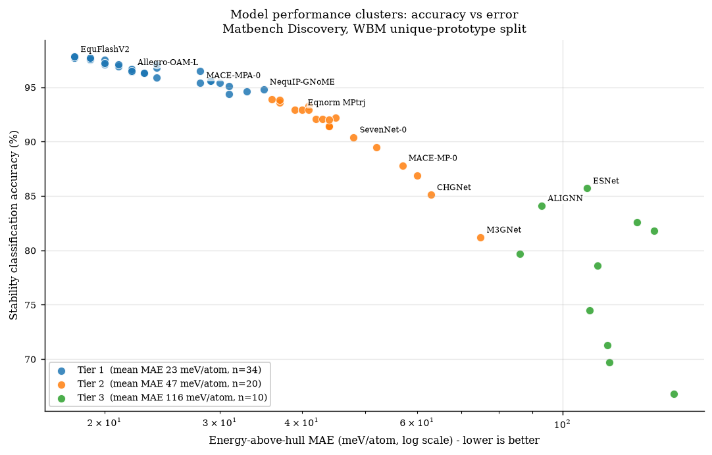
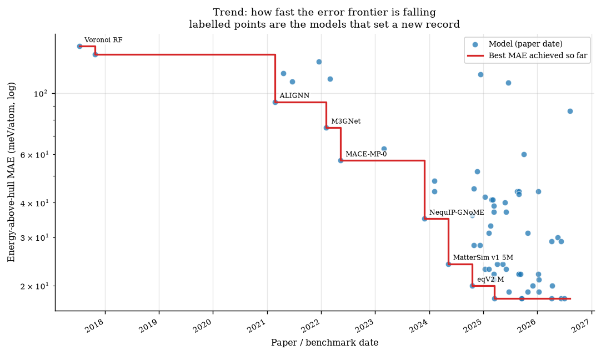
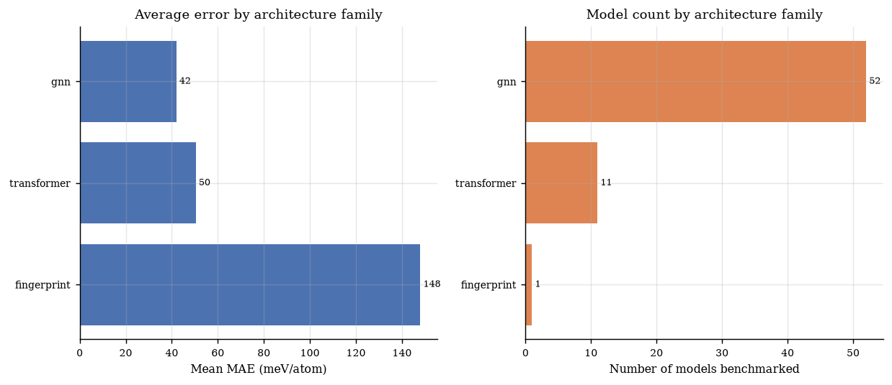
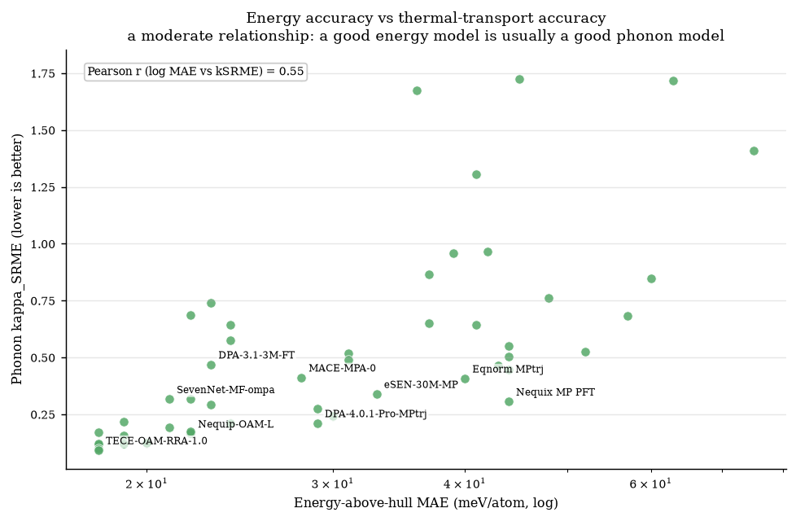
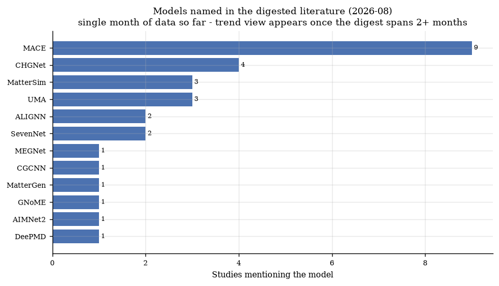

Generated 2026-08-29 by build_summary.py. Rows are ordered by reported accuracy (descending), then by error (ascending) — not chronologically. Blank cells mean the value was not published in a machine-readable form.





| # | Model | Acc. (%) | MAE (meV/atom) | RMSE (meV/atom) | F1 | R² | kSRME | Tier | Arch. | Params | Calculation method | Materials | Training set | Date | DOI | Repo |
|---|---|---|---|---|---|---|---|---|---|---|---|---|---|---|---|---|
| 1 | EquFlashV2 | 97.8 | 18 | 66 | 0.929 | 0.873 | 0.094 | 1 | gnn | 44.9M | DFT PBE(+U), Materials Project settings; DFT single-point + relaxation: energy, forces, stress | WBM (unique prototypes), inorganic crystals vs MP convex hull | MPtrj, OMat24, sAlex | 2026-06-11 | link | repo |
| 2 | EquiformerV3+DeNS-OAM | 97.8 | 18 | 67 | 0.931 | 0.868 | 0.118 | 1 | transformer | 30.3M | DFT PBE(+U), Materials Project settings; DFT single-point + relaxation: energy, forces, stress | WBM (unique prototypes), inorganic crystals vs MP convex hull | MPtrj, OMat24, sAlex | 2026-04-07 | 10.48550/arXiv.2604.09130 | repo |
| 3 | TACE-OAM-RRA-Preview | 97.8 | 18 | 68 | 0.928 | 0.866 | 0.101 | 1 | gnn | 213.7M | DFT PBE(+U), Materials Project settings; DFT single-point + relaxation: energy, forces, stress | WBM (unique prototypes), inorganic crystals vs MP convex hull | MPtrj, OMat24, sAlex | 2025-09-18 | 10.57967/hf/7458 | repo |
| 4 | TECE-OAM-RRA-1.0 | 97.8 | 18 | 66 | 0.929 | 0.871 | 0.093 | 1 | gnn | 221.9M | DFT PBE(+U), Materials Project settings; DFT single-point + relaxation: energy, forces, stress | WBM (unique prototypes), inorganic crystals vs MP convex hull | MPtrj, OMat24, sAlex | 2025-09-18 | 10.57967/hf/7458 | repo |
| 5 | eSEN-30M-OAM | 97.7 | 18 | 67 | 0.925 | 0.866 | 0.17 | 1 | gnn | 30.2M | DFT PBE(+U), Materials Project settings; DFT single-point + relaxation: energy, forces, stress | WBM (unique prototypes), inorganic crystals vs MP convex hull | MPtrj, OMat24, sAlex | 2025-03-17 | 10.48550/arXiv.2502.12147 | repo |
| 6 | GRACE-3L-OAM-L | 97.7 | 18 | 65 | 0.925 | 0.875 | 0.121 | 1 | gnn | 42.1M | DFT PBE(+U), Materials Project settings; S2EF | WBM (unique prototypes), inorganic crystals vs MP convex hull | MPtrj, OMat24, sAlex | 2026-07-02 | 10.1038/s41524-026-01979-1 | repo |
| 7 | PET-OAM-XL | 97.7 | 19 | 68 | 0.924 | 0.864 | 0.119 | 1 | transformer | 730.0M | DFT PBE(+U), Materials Project settings; DFT single-point + relaxation: energy, forces, stress | WBM (unique prototypes), inorganic crystals vs MP convex hull | MPtrj, OMat24, sAlex | 2026-01-10 | 10.1038/s41467-025-65662-7 | repo |
| 8 | MatRIS-10M-OAM | 97.6 | 19 | 66 | 0.921 | 0.871 | 0.218 | 1 | gnn | 10.4M | DFT PBE(+U), Materials Project settings; DFT energy, forces, stress, magmoms | WBM (unique prototypes), inorganic crystals vs MP convex hull | MPtrj, OMat24, sAlex | 2025-10-29 | 10.48550/arXiv.2603.02002 | repo |
| 9 | EquFlash | 97.5 | 19 | 66 | 0.919 | 0.871 | 0.158 | 1 | gnn | 28.7M | DFT PBE(+U), Materials Project settings; DFT single-point + relaxation: energy, forces, stress | WBM (unique prototypes), inorganic crystals vs MP convex hull | MPtrj, OMat24, sAlex | 2025-06-23 | link | repo |
| 10 | eqV2 M | 97.5 | 20 | 72 | 0.917 | 0.848 | 1.771 | 1 | transformer | 86.6M | DFT PBE(+U), Materials Project settings; DFT single-point + relaxation: energy, forces, stress | WBM (unique prototypes), inorganic crystals vs MP convex hull | MPtrj, OMat24 | 2024-10-18 | 10.48550/arXiv.2410.12771 | repo |
| 11 | TACE-OAM-L | 97.2 | 20 | 67 | 0.91 | 0.868 | 0.126 | 1 | gnn | 82.9M | DFT PBE(+U), Materials Project settings; DFT single-point + relaxation: energy, forces, stress | WBM (unique prototypes), inorganic crystals vs MP convex hull | MPtrj, OMat24, sAlex | 2026-04-09 | 10.57967/hf/7458 | repo |
| 12 | Nequip-OAM-XL | 97.1 | 20 | 66 | 0.906 | 0.872 | 0.125 | 1 | gnn | 32.1M | DFT PBE(+U), Materials Project settings; DFT single-point + relaxation: energy, forces, stress | WBM (unique prototypes), inorganic crystals vs MP convex hull | MPtrj, OMat24, sAlex | 2025-11-30 | 10.5281/zenodo.16980200 | repo |
| 13 | SevenNet-Omni-i12 | 97.1 | 21 | 67 | 0.906 | 0.868 | 0.192 | 1 | gnn | 54.9M | DFT (see training set); DFT single-point + relaxation: energy, forces, stress | WBM (unique prototypes), inorganic crystals vs MP convex hull | COSMOSDataset | 2026-01-12 | 10.48550/arXiv.2510.11241 | repo |
| 14 | ORB v3 | 97.1 | 24 | 78 | 0.905 | 0.821 | 0.21 | 1 | transformer | 25.5M | DFT PBE(+U), Materials Project settings; DFT single-point + relaxation: energy, forces, stress | WBM (unique prototypes), inorganic crystals vs MP convex hull | MPtrj, Alex, OMat24 | 2025-04-05 | 10.48550/arXiv.2504.06231 | repo |
| 15 | SevenNet-MF-ompa | 96.9 | 21 | 67 | 0.901 | 0.867 | 0.317 | 1 | gnn | 25.7M | DFT PBE(+U), Materials Project settings; DFT single-point + relaxation: energy, forces, stress | WBM (unique prototypes), inorganic crystals vs MP convex hull | MPtrj, OMat24, sAlex | 2025-03-13 | 10.1021/jacs.4c14455 | repo |
| 16 | AlphaNet-v1-OAM | 96.8 | 24 | 76 | 0.901 | 0.831 | 0.643 | 1 | gnn | 4.7M | DFT PBE(+U), Materials Project settings; DFT single-point + relaxation: energy, forces, stress | WBM (unique prototypes), inorganic crystals vs MP convex hull | MPtrj, OMat24, sAlex | 2025-05-12 | 10.48550/arXiv.2501.07155 | repo |
| 17 | Nequip-OAM-L | 96.7 | 22 | 68 | 0.893 | 0.865 | 0.166 | 1 | gnn | 9.6M | DFT PBE(+U), Materials Project settings; DFT single-point + relaxation: energy, forces, stress | WBM (unique prototypes), inorganic crystals vs MP convex hull | MPtrj, OMat24, sAlex | 2025-08-28 | 10.5281/zenodo.16980200 | repo |
| 18 | Allegro-OAM-L | 96.6 | 22 | 67 | 0.895 | 0.868 | 0.319 | 1 | gnn | 9.7M | DFT PBE(+U), Materials Project settings; DFT single-point + relaxation: energy, forces, stress | WBM (unique prototypes), inorganic crystals vs MP convex hull | MPtrj, OMat24, sAlex | 2025-08-28 | 10.5281/zenodo.16980200 | repo |
| 19 | DPA3-v2-OpenLAM | 96.6 | 22 | 67 | 0.89 | 0.869 | 0.688 | 1 | gnn | 7.0M | DFT (see training set); DFT single-point + relaxation: energy, forces, stress | WBM (unique prototypes), inorganic crystals vs MP convex hull | OpenLAM | 2025-03-14 | 10.1038/s41524-026-02146-2 | repo |
| 20 | TACE-v1-OAM-M | 96.5 | 22 | 68 | 0.889 | 0.865 | 0.173 | 1 | gnn | 18.8M | DFT PBE(+U), Materials Project settings; DFT single-point + relaxation: energy, forces, stress | WBM (unique prototypes), inorganic crystals vs MP convex hull | MPtrj, OMat24, sAlex | 2026-01-06 | 10.57967/hf/7458 | repo |
| 21 | ORB v2 MPA | 96.5 | 28 | 77 | 0.88 | 0.824 | 1.734 | 1 | transformer | 25.2M | DFT PBE(+U), Materials Project settings; DFT single-point + relaxation: energy, forces, stress | WBM (unique prototypes), inorganic crystals vs MP convex hull | MPtrj, Alex | 2024-10-29 | 10.48550/arXiv.2410.22570 | repo |
| 22 | GRACE-2L-OAM-L | 96.4 | 22 | 68 | 0.883 | 0.862 | 0.169 | 1 | gnn | 26.4M | DFT PBE(+U), Materials Project settings; S2EF | WBM (unique prototypes), inorganic crystals vs MP convex hull | MPtrj, OMat24, sAlex | 2025-09-09 | 10.48550/arXiv.2508.17936 | repo |
| 23 | DPA-3.1-3M-FT | 96.3 | 23 | 67 | 0.884 | 0.869 | 0.469 | 1 | gnn | 3.3M | DFT (see training set); DFT single-point + relaxation: energy, forces, stress | WBM (unique prototypes), inorganic crystals vs MP convex hull | OpenLAM | 2025-06-05 | 10.1038/s41524-026-02146-2 | repo |
| 24 | DPA3-v1-OpenLAM | 96.3 | 23 | 67 | 0.883 | 0.869 | 0.741 | 1 | gnn | 8.2M | DFT (see training set); DFT single-point + relaxation: energy, forces, stress | WBM (unique prototypes), inorganic crystals vs MP convex hull | OpenLAM | 2025-01-10 | 10.1038/s41524-026-02146-2 | repo |
| 25 | GRACE-2L-OAM | 96.3 | 23 | 68 | 0.88 | 0.862 | 0.294 | 1 | gnn | 12.6M | DFT PBE(+U), Materials Project settings; S2EF | WBM (unique prototypes), inorganic crystals vs MP convex hull | MPtrj, OMat24, sAlex | 2025-02-06 | 10.1103/PhysRevX.14.021036 | repo |
| 26 | MatterSim v1 5M | 95.9 | 24 | 68 | 0.862 | 0.863 | 0.575 | 1 | gnn | 4.5M | DFT (see training set); DFT single-point + relaxation: energy, forces, stress | WBM (unique prototypes), inorganic crystals vs MP convex hull | MatterSim | 2024-05-08 | 10.48550/arXiv.2405.04967 | repo |
| 27 | DPA-4.0.1-Pro-MPtrj | 95.6 | 29 | 74 | 0.857 | 0.836 | 0.211 | 1 | gnn | 22.8M | DFT PBE(+U), Materials Project settings; DFT single-point + relaxation: energy, forces, stress | WBM (unique prototypes), inorganic crystals vs MP convex hull | MPtrj | 2026-06-11 | 10.48550/arXiv.2606.02419 | repo |
| 28 | EquiformerV3+DeNS-MP | 95.6 | 29 | 74 | 0.863 | 0.84 | 0.275 | 1 | transformer | 30.3M | DFT PBE(+U), Materials Project settings; DFT single-point + relaxation: energy, forces, stress | WBM (unique prototypes), inorganic crystals vs MP convex hull | MPtrj | 2026-04-07 | 10.48550/arXiv.2604.09130 | repo |
| 29 | MACE-MPA-0 | 95.4 | 28 | 73 | 0.852 | 0.842 | 0.412 | 1 | gnn | 9.1M | DFT PBE(+U), Materials Project settings; DFT single-point + relaxation: energy, forces, stress | WBM (unique prototypes), inorganic crystals vs MP convex hull | MPtrj, sAlex | 2024-12-09 | 10.48550/arXiv.2401.00096 | repo |
| 30 | DPA-4.0-Pro-MPtrj | 95.4 | 30 | 78 | 0.85 | 0.823 | 0.241 | 1 | gnn | 32.7M | DFT PBE(+U), Materials Project settings; DFT single-point + relaxation: energy, forces, stress | WBM (unique prototypes), inorganic crystals vs MP convex hull | MPtrj | 2026-05-20 | 10.48550/arXiv.2606.02419 | repo |
| 31 | MatRIS-10M-MP | 95.1 | 31 | 77 | 0.847 | 0.824 | 0.489 | 1 | gnn | 10.4M | DFT PBE(+U), Materials Project settings; DFT energy, forces, stress, magmoms | WBM (unique prototypes), inorganic crystals vs MP convex hull | MPtrj | 2025-10-29 | 10.48550/arXiv.2603.02002 | repo |
| 32 | NequIP-GNoME | 94.8 | 35 | 85 | 0.829 | 0.785 | 1 | gnn | 16.2M | DFT (see training set); DFT single-point + relaxation: energy, forces, stress | WBM (unique prototypes), inorganic crystals vs MP convex hull | GNoME | 2023-11-29 | 10.1038/s41586-023-06735-9 | repo | |
| 33 | eSEN-30M-MP | 94.6 | 33 | 78 | 0.831 | 0.822 | 0.34 | 1 | gnn | 30.1M | DFT PBE(+U), Materials Project settings; DFT single-point + relaxation: energy, forces, stress | WBM (unique prototypes), inorganic crystals vs MP convex hull | MPtrj | 2025-02-17 | 10.48550/arXiv.2502.12147 | repo |
| 34 | GRACE-1L-OAM | 94.4 | 31 | 73 | 0.824 | 0.842 | 0.517 | 1 | gnn | 3.4M | DFT PBE(+U), Materials Project settings; S2EF | WBM (unique prototypes), inorganic crystals vs MP convex hull | MPtrj, OMat24, sAlex | 2025-02-06 | 10.1103/PhysRevX.14.021036 | repo |
| 35 | eqV2 S DeNS | 93.9 | 36 | 85 | 0.815 | 0.788 | 1.676 | 2 | transformer | 31.2M | DFT PBE(+U), Materials Project settings; DFT single-point + relaxation: energy, forces, stress | WBM (unique prototypes), inorganic crystals vs MP convex hull | MPtrj | 2024-10-18 | 10.48550/arXiv.2410.12771 | repo |
| 36 | MatRIS v0.5.0 MPtrj | 93.8 | 37 | 82 | 0.809 | 0.803 | 0.865 | 2 | gnn | 5.8M | DFT PBE(+U), Materials Project settings; DFT energy, forces, stress, magmoms | WBM (unique prototypes), inorganic crystals vs MP convex hull | MPtrj | 2025-03-13 | 10.48550/arXiv.2603.02002 | repo |
| 37 | DPA-3.1-MPtrj | 93.6 | 37 | 80 | 0.803 | 0.812 | 0.65 | 2 | gnn | 4.8M | DFT PBE(+U), Materials Project settings; DFT single-point + relaxation: energy, forces, stress | WBM (unique prototypes), inorganic crystals vs MP convex hull | MPtrj | 2025-06-05 | 10.1038/s41524-026-02146-2 | repo |
| 38 | AlphaNet-v1-MPtrj | 93.3 | 41 | 93 | 0.799 | 0.745 | 1.305 | 2 | gnn | 16.2M | DFT PBE(+U), Materials Project settings; DFT single-point + relaxation: energy, forces, stress | WBM (unique prototypes), inorganic crystals vs MP convex hull | MPtrj | 2025-03-05 | 10.48550/arXiv.2501.07155 | repo |
| 39 | DPA3-v2-MPtrj | 92.9 | 39 | 81 | 0.786 | 0.804 | 0.96 | 2 | gnn | 4.9M | DFT PBE(+U), Materials Project settings; DFT single-point + relaxation: energy, forces, stress | WBM (unique prototypes), inorganic crystals vs MP convex hull | MPtrj | 2025-03-14 | 10.1038/s41524-026-02146-2 | repo |
| 40 | Eqnorm MPtrj | 92.9 | 40 | 83 | 0.786 | 0.799 | 0.408 | 2 | gnn | 1.3M | DFT PBE(+U), Materials Project settings; DFT single-point + relaxation: energy, forces, stress | WBM (unique prototypes), inorganic crystals vs MP convex hull | MPtrj | 2025-05-26 | link | repo |
| 41 | HIENet | 92.9 | 41 | 84 | 0.777 | 0.793 | 0.642 | 2 | gnn | 7.5M | DFT PBE(+U), Materials Project settings; DFT single-point + relaxation: energy, forces, stress | WBM (unique prototypes), inorganic crystals vs MP convex hull | MPtrj | 2025-02-25 | 10.48550/arXiv.2503.05771 | repo |
| 42 | ORB v2 MPtrj | 92.2 | 45 | 91 | 0.765 | 0.756 | 1.726 | 2 | transformer | 25.2M | DFT PBE(+U), Materials Project settings; DFT single-point + relaxation: energy, forces, stress | WBM (unique prototypes), inorganic crystals vs MP convex hull | MPtrj | 2024-10-29 | 10.48550/arXiv.2410.22570 | repo |
| 43 | DPA3-v1-MPtrj | 92.1 | 42 | 83 | 0.765 | 0.798 | 0.965 | 2 | gnn | 3.4M | DFT PBE(+U), Materials Project settings; DFT single-point + relaxation: energy, forces, stress | WBM (unique prototypes), inorganic crystals vs MP convex hull | MPtrj | 2025-01-10 | 10.1038/s41524-026-02146-2 | repo |
| 44 | Nequip-MP-L | 92.1 | 43 | 84 | 0.761 | 0.791 | 0.466 | 2 | gnn | 9.6M | DFT PBE(+U), Materials Project settings; DFT single-point + relaxation: energy, forces, stress | WBM (unique prototypes), inorganic crystals vs MP convex hull | MPtrj | 2025-08-28 | 10.5281/zenodo.16980200 | repo |
| 45 | SevenNet-l3i5 | 92 | 44 | 87 | 0.76 | 0.776 | 0.55 | 2 | gnn | 1.2M | DFT PBE(+U), Materials Project settings; DFT single-point + relaxation: energy, forces, stress | WBM (unique prototypes), inorganic crystals vs MP convex hull | MPtrj | 2024-02-06 | 10.1021/acs.jctc.4c00190 | repo |
| 46 | Allegro-MP-L | 91.5 | 44 | 87 | 0.751 | 0.778 | 0.504 | 2 | gnn | 18.7M | DFT PBE(+U), Materials Project settings; DFT single-point + relaxation: energy, forces, stress | WBM (unique prototypes), inorganic crystals vs MP convex hull | MPtrj | 2025-08-28 | 10.5281/zenodo.16980200 | repo |
| 47 | Nequix MP PFT | 91.4 | 44 | 85 | 0.748 | 0.784 | 0.307 | 2 | gnn | 708k | DFT PBE(+U), Materials Project settings; DFT single-point + relaxation: energy, forces, stress | WBM (unique prototypes), inorganic crystals vs MP convex hull | MPtrj, MDR-MP PBE ω_q | 2026-01-08 | 10.48550/arXiv.2601.07742 | repo |
| 48 | Nequix MP | 91.4 | 44 | 86 | 0.751 | 0.782 | 0.446 | 2 | gnn | 708k | DFT PBE(+U), Materials Project settings; DFT single-point + relaxation: energy, forces, stress | WBM (unique prototypes), inorganic crystals vs MP convex hull | MPtrj | 2025-08-17 | 10.48550/arXiv.2508.16067 | repo |
| 49 | SevenNet-0 | 90.4 | 48 | 92 | 0.724 | 0.75 | 0.762 | 2 | gnn | 842k | DFT PBE(+U), Materials Project settings; DFT single-point + relaxation: energy, forces, stress | WBM (unique prototypes), inorganic crystals vs MP convex hull | MPtrj | 2024-02-06 | 10.1021/acs.jctc.4c00190 | repo |
| 50 | GRACE-2L-MPtrj | 89.5 | 52 | 94 | 0.691 | 0.741 | 0.525 | 2 | gnn | 15.3M | DFT PBE(+U), Materials Project settings; S2EF | WBM (unique prototypes), inorganic crystals vs MP convex hull | MPtrj | 2024-11-21 | 10.1103/PhysRevX.14.021036 | repo |
| 51 | MACE-MP-0 | 87.8 | 57 | 101 | 0.669 | 0.697 | 0.682 | 2 | gnn | 4.7M | DFT PBE(+U), Materials Project settings; DFT single-point + relaxation: energy, forces, stress | WBM (unique prototypes), inorganic crystals vs MP convex hull | MPtrj | 2022-05-13 | 10.48550/arXiv.2401.00096 | repo |
| 52 | BAM-MP-core | 86.9 | 60 | 99 | 0.623 | 0.712 | 0.848 | 2 | gnn | 17.0M | DFT PBE(+U), Materials Project settings; DFT single-point + relaxation: energy, forces, stress | WBM (unique prototypes), inorganic crystals vs MP convex hull | MPtrj | 2025-10-03 | 10.48550/arXiv.2510.03046 | repo |
| 53 | ESNet | 85.7 | 109 | 194 | 0.572 | -0.114 | 3 | transformer | 5.4M | DFT (see training set); relaxed structure to relaxed energy | WBM (unique prototypes), inorganic crystals vs MP convex hull | MP 2022 | 2025-06-20 | 10.21203/rs.3.rs-5979703/v1 | repo | |
| 54 | CHGNet | 85.1 | 63 | 103 | 0.613 | 0.689 | 1.717 | 2 | gnn | 413k | DFT PBE(+U), Materials Project settings; DFT energy, forces, stress, magmoms | WBM (unique prototypes), inorganic crystals vs MP convex hull | MPtrj | 2023-03-01 | 10.48550/arXiv.2302.14231 | repo |
| 55 | ALIGNN | 84.1 | 93 | 154 | 0.567 | 0.297 | 3 | gnn | 4.0M | DFT (see training set); relaxed structure to relaxed energy | WBM (unique prototypes), inorganic crystals vs MP convex hull | MP 2022 | 2021-02-22 | 10.1038/s41524-021-00650-1 | repo | |
| 56 | MEGNet | 82.6 | 130 | 206 | 0.51 | -0.248 | 3 | gnn | 168k | DFT (see training set); relaxed structure to relaxed energy | WBM (unique prototypes), inorganic crystals vs MP convex hull | MP Graphs | 2021-12-18 | 10.1021/acs.chemmater.9b01294 | repo | |
| 57 | CGCNN | 81.8 | 138 | 233 | 0.507 | -0.603 | 3 | gnn | 128k | DFT (see training set); relaxed structure to relaxed energy | WBM (unique prototypes), inorganic crystals vs MP convex hull | MP 2022 | 2017-10-27 | 10.1103/PhysRevLett.120.145301 | repo | |
| 58 | M3GNet | 81.2 | 75 | 118 | 0.569 | 0.585 | 1.409 | 2 | gnn | 228k | DFT PBE(+U), MPF2021; DFT single-point + relaxation: energy, forces, stress | WBM (unique prototypes), inorganic crystals vs MP convex hull | MPF | 2022-02-05 | 10.1038/s43588-022-00349-3 | repo |
| 59 | EMA-GNN | 79.7 | 86 | 141 | 0.558 | 0.412 | 3 | gnn | 2.2M | DFT (see training set); relaxed structure to relaxed energy | WBM (unique prototypes), inorganic crystals vs MP convex hull | MP 2022 | 2026-08-08 | 10.6084/m9.figshare.33111509 | repo | |
| 60 | CGCNN+P | 78.6 | 113 | 182 | 0.5 | 0.019 | 3 | gnn | 128k | DFT (see training set); structure to relaxed energy | WBM (unique prototypes), inorganic crystals vs MP convex hull | MP 2022 | 2022-02-28 | 10.1038/s41524-022-00891-8 | repo | |
| 61 | Wrenformer | 74.5 | 110 | 186 | 0.466 | -0.018 | 3 | transformer | 5.2M | DFT (see training set); relaxed prototype to relaxed energy | WBM (unique prototypes), inorganic crystals vs MP convex hull | MP 2022 | 2021-06-21 | 10.1126/sciadv.abn4117 | repo | |
| 62 | AlchemBERT | 71.3 | 117 | 175 | 0.421 | 0.096 | 3 | transformer | 110.0M | DFT (see training set); relaxed structure to relaxed energy | WBM (unique prototypes), inorganic crystals vs MP convex hull | MP 2022 | 2024-12-11 | 10.26434/chemrxiv-2024-r4dnl | repo | |
| 63 | BOWSR | 69.7 | 118 | 167 | 0.423 | 0.151 | 3 | gnn, bayesian_optimization | 168k | DFT (see training set); relaxed structure to relaxed energy | WBM (unique prototypes), inorganic crystals vs MP convex hull | MP Graphs | 2021-04-20 | 10.1016/j.mattod.2021.08.012 | repo | |
| 64 | Voronoi RF | 66.8 | 148 | 212 | 0.333 | -0.329 | 3 | fingerprint, random_forest | 26.2M | DFT (see training set); relaxed structure to relaxed energy | WBM (unique prototypes), inorganic crystals vs MP convex hull | MP 2022 | 2017-07-14 | 10.1103/PhysRevB.96.024104 | repo | |
| 65 | ALIGNN FF | gnn | DFT PBE(+U), Materials Project settings; DFT single-point + relaxation: energy, forces, stress | MPtrj | 2022-09-16 | 10.1039/D2DD00096B | repo |
These fields were blank in the automated sources. Add missing values to manual_data.json and rerun build_summary.py.
| Model | Missing fields | DOI | Repo |
|---|---|---|---|
| EquFlashV2 | DOI | link | repo |
| EquFlash | DOI | link | repo |
| NequIP-GNoME | Phonon kSRME, Geometry-opt RMSD | 10.1038/s41586-023-06735-9 | repo |
| Eqnorm MPtrj | DOI | link | repo |
| ESNet | Phonon kSRME, Geometry-opt RMSD | 10.21203/rs.3.rs-5979703/v1 | repo |
| ALIGNN | Phonon kSRME, Geometry-opt RMSD | 10.1038/s41524-021-00650-1 | repo |
| MEGNet | Phonon kSRME, Geometry-opt RMSD | 10.1021/acs.chemmater.9b01294 | repo |
| CGCNN | Phonon kSRME, Geometry-opt RMSD | 10.1103/PhysRevLett.120.145301 | repo |
| EMA-GNN | Phonon kSRME, Geometry-opt RMSD | 10.6084/m9.figshare.33111509 | repo |
| CGCNN+P | Phonon kSRME, Geometry-opt RMSD | 10.1038/s41524-022-00891-8 | repo |
| Wrenformer | Phonon kSRME, Geometry-opt RMSD | 10.1126/sciadv.abn4117 | repo |
| AlchemBERT | Phonon kSRME, Geometry-opt RMSD | 10.26434/chemrxiv-2024-r4dnl | repo |
| BOWSR | Phonon kSRME | 10.1016/j.mattod.2021.08.012 | repo |
| Voronoi RF | Phonon kSRME, Geometry-opt RMSD | 10.1103/PhysRevB.96.024104 | repo |
| ALIGNN FF | Accuracy (%), MAE (meV/atom), RMSE (meV/atom), F1, R2, Phonon kSRME, Geometry-opt RMSD, Parameter count | 10.1039/D2DD00096B | repo |
manual_data.json override everything above and survive future runs.Fill in a row below and click the button to generate the JSON snippet. Then paste it into manual_data.json and rerun build_summary.py. This is a convenience form for the same file; it does not edit the repository directly.